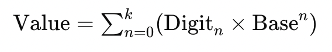

Number Systems
What are Number Systems?
Introduction to Number Systems
Number systems are fundamental frameworks used to represent and manipulate numbers using a consistent set of rules and symbols.
A number system, also known as a numeral system, defines how numbers are expressed and understood in various contexts.
The most commonly used number system is the decimal system, which employs ten digits (0–9) and is familiar in everyday life. However, other systems such as binary, octal, and hexadecimal are crucial, especially in computing and digital communication (Latif et al., 2011).
Binary and Decimal Systems in Computing
In the digital realm, binary numbers, consisting of only two digits (0 and 1), are predominantly used because they align well with the two-state nature of computer hardware components.
Computers operate using binary digits (bits) to process and store data.
A bit represents the simplest form of information in a computer, and binary arithmetic allows for rapid computation and data manipulation (Dewhurst, 1988).
Although humans typically work with the decimal system, interconversion between binary, decimal, and hexadecimal systems is crucial in computing tasks, such as encoding data for transmission or performing arithmetic operations in microprocessors (Latif et al., 2011)
In computing, number systems are fundamental because they determine how data is stored, processed, and communicated within a computer's architecture. The total number of digits or symbols used in a number system is called its base or radix, which is crucial in defining the characteristics of the system (Mahat et al., 2020).
Positional Number Systems
The positional number system, which includes binary, decimal, octal, and hexadecimal systems, assigns a place value to each digit depending on its position and the base of the system.
This positional concept is the foundation of various number systems and underpins their practical use in computing and mathematics (Jha, 2020).
For example, in a binary number, the place values increase from right to left as powers of two, just as decimal place values increase as powers of ten (Dewhurst, 1988).
Overview of Numeral Systems
A numeral system, also referred to as a system of numeration, is a consistent method of representing numbers using a set of digits or symbols.
The same sequence of symbols can represent different numbers depending on the numeral system being used.
For instance, "11" represents eleven in the decimal system, three in the binary system, and two in the unary system (Robert, 2022).
Different numeral systems have varying capabilities; for example, Roman numerals do not include a symbol for zero. A well-structured numeral system should ideally represent a usable set of numbers, such as integers or rational numbers (Robert, 2022).
Exploration of Non-Standard Number Systems
Additionally, non-standard number systems such as those with negative or fractional bases have also been explored for theoretical and practical applications.
Negative base systems, for instance, have potential uses in cryptography and mathematical Analysis.
Rossi and Thuswaldner (2022) introduced a number system with a base of -3, demonstrating the diversity of approaches in representing numbers.
Number Systems in Summary
Number systems are essential not only in everyday arithmetic but also in specialized fields like computer science, digital communication, and cryptography.
The binary, octal, decimal, and hexadecimal systems are particularly significant in digital technologies, where efficient number manipulation is crucial for data processing.
Understanding multiple number systems helps students and professionals grasp how numbers function across various contexts, enhancing their ability to work in digital and mathematical domains (Latif et al., 2011; Dewhurst, 1988; Jha, 2020; Robert, 2022; Rossi & Thuswaldner, 2022).
Types of Number Systems
Binary Number System (Base 2)
The binary number system has a base of 2 and uses only two digits: 0 and 1.
It is fundamental to computer systems because digital devices operate using binary logic, where 0 represents an "off" state and 1 represents an "on" state (Olajide, 2017; Mahat et al., 2020).
For instance, 1000110₂ is a valid binary number, while a sequence like 1100200₂ is not valid because it includes a digit outside the binary system (Hussein, 2020).
The binary system is the most fundamental number system in digital electronics, where a binary "bit" represents the state of an electronic switch—either on (1) or off (0) (Mahat et al., 2020).
Each position in a binary number represents a power of 2.
For instance, the binary number 1011 equals: (1×2³)+(0×2²)+(1×2¹)+(1×2⁰) = 11 in decimal
Octal Number System (Base 8)
The octal number system has a base of 8 and uses eight digits: 0 through 7.
Each digit represents a power of 8.
Octal numbers are useful in computing because they provide a shorter representation of binary numbers, grouping binary digits into sets of three (Hussein, 2020).
Conversion between binary and octal is relatively straightforward since three binary digits correspond directly to one octal digit.
For example, the binary sequence 101010₂ equals 52₈ (Hussein, 2020).
Decimal Number System (Base 10)
The decimal number system is the most familiar to humans, used in everyday counting and arithmetic.
It has a base of 10 and uses ten digits: 0 through 9.
Each position in a decimal number represents a power of 10, and the value of a digit depends on its position (Hussein, 2020).
While binary numbers are used in computing, decimal numbers are often used for input and output purposes, with conversions handled internally (Mahat et al., 2020).
Hexadecimal Number System (Base 16)
The hexadecimal number system has a base of 16 and uses sixteen symbols: digits 0 through 9 and letters A through F, where A represents 10 and F represents 15 (Olajide, 2017).
Hexadecimal is widely used in computing as a human-friendly representation of binary-coded values, with each hexadecimal digit corresponding to four binary bits (Hussein, 2020; Lande, 2014).
This system is especially useful in computing because one hexadecimal digit corresponds to four binary digits.
For instance, 5AC₁₆ corresponds to 10110101100₂.
Hexadecimal numbers are commonly used in programming to represent binary data more compactly, such as in color coding and memory addresses (Katiyar, 2015; Hussein, 2020).
Other Number Systems
Beyond the commonly used systems, alternative numeral systems like the duodecimal (base 12) system have been proposed due to their divisibility properties. They have been explored for specific applications due to their divisibility properties (Lande, 2014). While not as prevalent in computing, they offer unique advantages in mathematical computations.
In a duodecimal system, symbols for 10 and 11 are typically A and B, respectively, and this system allows for more straightforward fraction representations, such as 1/3 and 1/4 (Lande, 2014). Such systems are less commonly used but have advantages in certain mathematical and practical applications.
Positional Notation and Base (Radix)
In positional number systems, the value of each digit is determined by its position and the base of the system.
-
The general formula for any positional number system is:

where n is the position of the digit, and k is the highest power based on the number's length (Hussein, 2020; Katiyar, 2015).
Number System Conversions
Converting numbers from one base to another is essential in computing, especially when interpreting machine-level data or optimizing algorithms (Mahat et al., 2020).
-
Common conversions include:
Binary to Decimal: Sum the products of each binary digit with its corresponding power of 2.
Decimal to Binary: Divide the decimal number by 2 repeatedly and record the remainders.
Binary to Hexadecimal: Group binary digits into sets of four and replace each with the corresponding hexadecimal digit (Katiyar, 2015).
Signed and Unsigned Numbers
In binary systems, numbers can be:
-
Unsigned: Represent only non-negative values (0 and positive numbers). The range is from 0 to 2n−12^n - 12n−1, where nnn is the number of bits (Katiyar, 2015).
Signed: Represent both positive and negative values. The two's complement method is commonly used, where the most significant bit indicates the sign (0 for positive, 1 for negative), and the value is calculated accordingly (Katiyar, 2015).
ASCII Character Encoding
ASCII (American Standard Code for Information Interchange) is a character encoding standard that represents text in computers using binary numbers.
Each character is assigned a unique 7-bit or 8-bit binary code, enabling the representation of letters, numbers, and control characters (Katiyar, 2015).
For example, the ASCII code for the uppercase letter "A" is 65 in decimal or 01000001 in binary.
Role of Number Systems in Computing
Computer systems use various number systems for different tasks.
Binary is the fundamental system used by processors for calculations and logical operations.
Hexadecimal is often used for representing large binary numbers compactly, especially in machine-level programming (Olajide, 2017).
For instance, computers can store and process binary data as hexadecimal to simplify binary arithmetic and save memory space (Mahat et al., 2020).
The binary system's development traces back to Leibniz in the 17th century, who proposed using binary to simplify calculations and logical operations.
This system's influence became critical in the development of digital computers, where operations are performed using binary logic gates (Lande, 2014).
Knowledge of these systems allows for efficient data processing, memory management, and hardware design (Lande, 2014).
Uses and Significance of Each Number System
Binary Number System (Base 2)
The binary number system, which uses only two digits, 0 and 1, is the backbone of modern digital technology.
It is used extensively in computer systems because of its simplicity and reliability in representing data, processing information, and performing calculations.
The binary system forms the basis of Boolean algebra, which is crucial for logical operations in computing.
It provides a reliable means for data storage, transmission, and processing, as its simplicity reduces errors and interference (Shamilov et al., 2021).
Historical evidence suggests that binary concepts were known in ancient China, as illustrated by the "I-ching" or "Book of Changes" and in the works of Leibniz, who noted its efficiency in arithmetic operations compared to other number systems (Shamilov et al., 2021).
Furthermore, despite advancements in technology, the binary system remains unmatched in its use for modern computer logic and structure.
Octal Number System (Base 10)
The octal number system, using digits 0 through 7, is another number system often utilized in computing, particularly in the early days of computer programming.
One of its advantages is that it simplifies binary representation by grouping binary digits in sets of three, making it easier to interpret long binary numbers (Plantz & Berman, 1971).
This system also eliminates the need for new symbols, as the symbols 8 and 9 are not used, thereby reducing ambiguity (Plantz & Berman, 1971).
The octal system offers unique advantages in certain applications, such as programming and interfacing with machines, due to its connection to binary and compatibility with computer hardware.
Decimal Number System (Base 8)
The decimal number system, or base-10, is the most familiar and widely used system in daily life.
Its significance lies in its simplicity for human comprehension and ease of use in arithmetic.
This system, especially its place value, is crucial in early mathematical education and the development of numeracy (Arnal-Palacián & Begué, 2023).
Teachers and students often encounter challenges when learning the base-ten system, particularly with the understanding of place value and the role of zero (Salinas, 2007; Castro et al., 2015).
Despite its commonality, the decimal system is not optimal for computer use due to the complexity involved in building machines that can handle decimal arithmetic efficiently (Shamilov et al., 2021).
Hexadecimal Number System (Base 16)
The hexadecimal system, or base-16, uses digits 0-9 and letters A-F.
It is widely used in computer science because it provides a more human-readable way of expressing binary data.
Each hexadecimal digit represents four binary digits, making it an efficient method for representing long binary numbers in a compact form.
The hexadecimal system was first formally recognized in 1954, and its use in computers was further standardized by the National Bureau of Standards (Strickland & Jones, 2023).
It is particularly useful in computer memory addressing and programming, as it allows for easier conversion between binary and a more compact numeric format.
Complex Binary Number System
A more advanced extension of the binary system is the complex binary number system, which integrates real and imaginary components.
This system has applications in fields such as digital signal processing and image processing.
Historically, the challenge of performing operations with complex numbers, especially division, limited their use in computing.
However, recent developments in algorithms have enabled efficient representation and computation of complex numbers in binary form, making them useful for microprocessor operations (Jamil, 2002).
Analysis
Number systems play a foundational role in mathematics and computing, shaping how we represent and process information. Various systems have emerged, each with unique applications and significance. Among these, the binary, decimal, octal, and hexadecimal systems stand out for their historical and practical value.
The binary number system, consisting of only 0s and 1s, is the backbone of modern computing. Its simplicity allows for efficient data storage, transmission, and processing in digital electronics. As highlighted by Shamilov et al. (2021), binary operations in computers are easier to implement due to their simplicity and resilience to interference. Although its use in information technology is well known, binary's roots trace back to ancient civilizations, like the Chinese I-Ching and early Hindu mathematics.
The decimal system, or base-ten, is the most familiar to humans, deeply integrated into everyday life. As noted by Arnal-Palacián and Begué (2023), the decimal system is crucial for teaching arithmetic and developing numeracy. However, it poses challenges, especially in learning place value and managing large numbers. Despite these difficulties, the decimal system's ease of use has cemented its role in human society for centuries.
The octal system (base-eight) is less common but plays an important role in computing, especially in the earlier days of programming. Plantz and Berman (1971) argue that octal could be a practical alternative to decimal due to its alignment with binary, offering advantages like reduced symbols and simpler machine interfacing. However, its adoption has remained niche, primarily used by computer programmers and engineers.
The hexadecimal system (base-sixteen) is widely used in computer science for its efficiency in representing large binary numbers. Strickland and Jones (2023) explain that hexadecimal uses digits 0-9 and letters A-F, which compress long binary sequences into a more manageable form. This system is instrumental in programming, memory addressing, and color coding in web design, making it indispensable in digital technology.
In summary, each number system serves a distinct purpose. The binary system's simplicity underpins all computing processes, while the decimal system remains vital in education and daily life. Octal and hexadecimal, though more specialized, are essential for efficient computation and programming. These systems, developed through historical and technological progress, reflect the diverse ways humans interact with numbers.
References
Arnal-Palacián, M., & Begué, N. (2023). Decimal number system: Professional noticing of mathematics teachers.
Dewhurst, J. (1988). Computer Number Systems. In: Business Mathematics. Palgrave, London. https://doi.org/10.1007/978-1-349-19038-6_2
Hussein, Q. (2020). Chapter one: Numbering system.
Jamil, T. (2002). The complex binary number system. IEEE Potentials, 20(5), 39–41. https://doi.org/10.1109/45.983342
Jha, A. C. (2020). Positional number system. NUTA Journal, 7(1 & 2), 1-xx. ISSN 2616-017x.
Katiyar, V. (2015). Number systems, base conversions, and computer data representation.
Lande, D. R. (2014). Development of the binary number system and the foundations of computer science. The Mathematics Enthusiast, 11(3), Article 6. https://doi.org/10.54870/1551-3440.1315
Latif, S., Qayyum, J., Lal, M., & Khan, F. (2011). Novel approach to the learning of various number systems. International Journal of Computer Applications, 26(2), 18-28. https://doi.org/10.5120/3116-4283
Mahat, S., Patil, M., & Jamsandekar, P. (2020). Number system for digital computers.
Olajide, A. (2017). Number system. Zenodo. https://doi.org/10.13140/RG.2.2.18838.04167
Plantz, A. R., & Berman, M. (1971). Adoption of the Octal Number System. IEEE Transactions on Computers, C-20(5), 593–598. doi:10.1109/t-c.1971.223307
Robert, W. (2022). An overview of number system. Research & Reviews: Journal of Statistics and Mathematical Sciences, 8(4). https://doi.org/10.4172/JStatsMathSci.8.4.002
Rossi, L., & Thuswaldner, J. M. (2022). A Number System with Base . The American Mathematical Monthly, 129(6), 539–553. https://doi.org/10.1080/00029890.2022.2061281
Shamilov, A., Quliyev, N., & Shamilov, Z. (2021). On the application of the binary number system in creating questions strategy. InterConf, 7-8, 320-328. https://doi.org/10.51582/interconf.7-8.05.2021.034
Strickland, L., & Jones, O. D. (2023). Things you (probably) didn’t know about hexadecimal. Math Intelligencer, 45(2), 126-130. https://doi.org/10.1007/s00283-022-10206-w